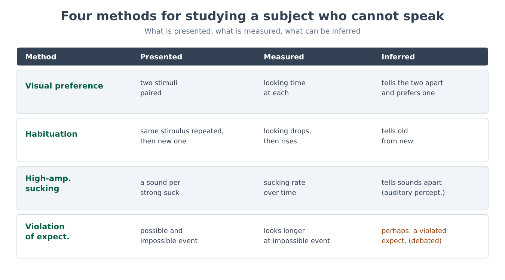
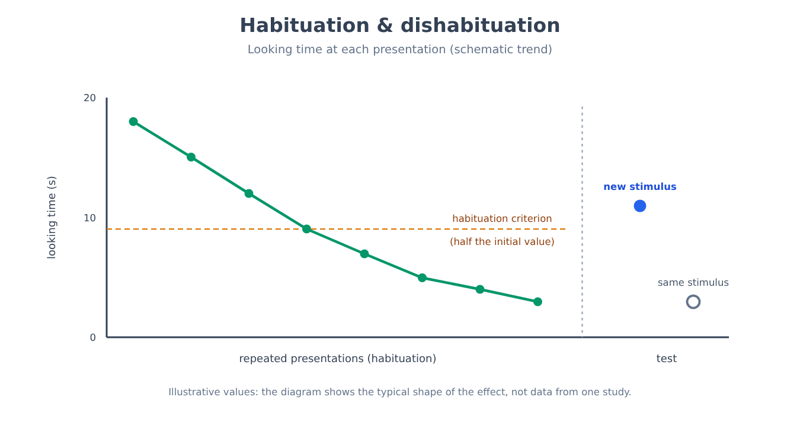
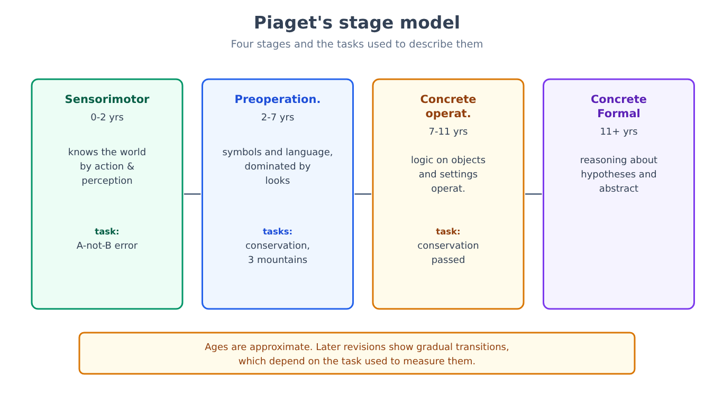
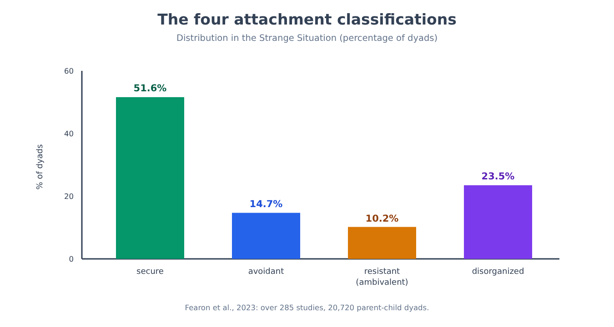
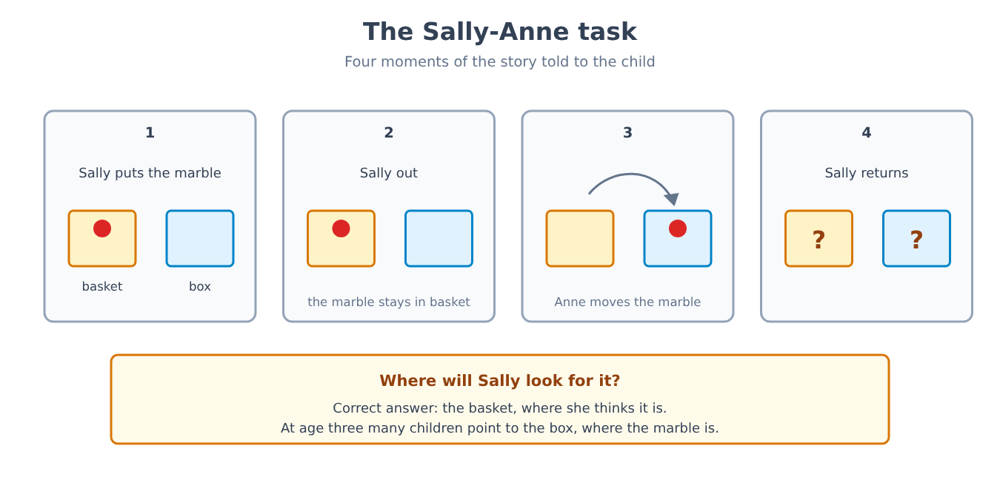
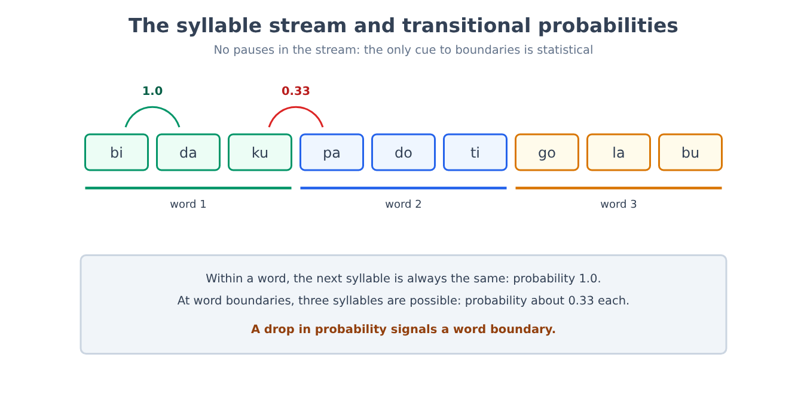
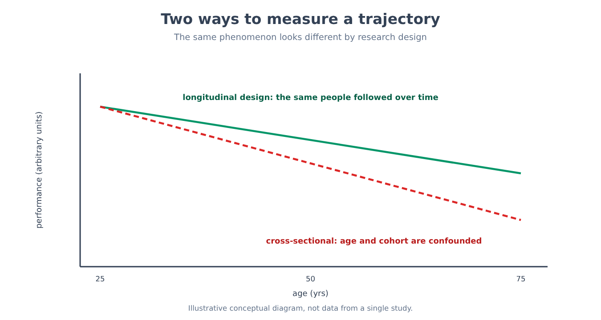

Part IX. Development
Chapter 54 — Studying a subject who cannot speak
[IN A NUTSHELL]
A newborn does not answer a questionnaire, does not follow instructions and does not explain why it does what it does. To find out what infants perceive, distinguish and expect, researchers have had to invent experimental designs that rely on what the baby does of its own accord: looking, sucking, getting bored, being surprised. This chapter sets out those methods, the logic of inference behind them and its weak points, because without them the next six chapters would be incomprehensible.
The problem: how to question someone who cannot answer
Imagine having to find out whether a four-month-old distinguishes two faces, two sounds or two quantities. You cannot ask, and if you could you would not get a reliable answer: even a three-year-old cannot explain what he or she knows. The problem is old and has a precise practical consequence. For decades, conclusions about the infant mind were drawn from what children were able to do with their hands and their voice, and a baby who could not yet grasp an object or say a word appeared, by construction, to lack abilities it may already have had.
The solution was to change the question. Instead of asking the baby to produce a response it cannot give, one looks for a behavior it can already produce (looking longer, sucking faster) and arranges the experiment so that this behavior becomes a signal. All the methods in this chapter are variants of the same idea: the baby answers with what it has, and the experimenter builds the question around that answer.
Four tools and what they measure
The preferential looking method places two stimuli side by side in front of the baby and records how long it looks at each. If the average time spent on one systematically exceeds the time spent on the other, the baby distinguishes the two stimuli, and in addition shows which one it prefers. The method requires no training, which makes it usable from the first days of life.
Habituation exploits a simple fact: attention declines in the face of a repeated stimulus. The same stimulus is presented several times until looking time drops below a criterion set in advance (for example, less than half the initial time over several consecutive trials), and then a new stimulus is presented. If looking goes back up, the baby has noticed the difference, a phenomenon called dishabituation. The advantage over preferential looking is that it works even when the baby has no spontaneous preference between the two stimuli: it is enough that it distinguishes them.
High-amplitude sucking uses a behavior the newborn masters from birth. The pacifier is connected to a pressure transducer, and every sufficiently strong suck triggers the appearance of a stimulus, usually a sound. The baby soon learns that sucking produces the sound, and sucks more; then, as the sound becomes familiar, the rate drops; if the sound changes and the baby notices, the rate goes back up. It is the same scheme as habituation, but with a motor response controlled by the baby, and it is particularly suited to auditory perception.
Violation of expectation is the most conceptually ambitious method. The baby is shown two events that differ in a single physical aspect, but one of which is possible according to a rule of the physical or social world (a solid object does not pass through another solid object) and the other impossible. If the baby looks longer at the impossible event, the inference is that it had an expectation and that this expectation was violated. It is the method that gave rise to most of the findings about the “baby who already knows a lot” and also, as we will see, to most of the controversies.

A design in full: the category the newborn hears
[THE EXPERIMENTAL DESIGN]
In the study by Peter Eimas, Einar Siqueland, Peter Jusczyk and James Vigorito (1971), one- and four-month-old infants sucked on a pacifier connected to a transducer, and every sufficiently strong suck produced a synthetic syllable. The sounds were built by varying, in regular steps of 20 milliseconds, a single acoustic parameter: the time between the release of the consonant and the onset of vocal cord vibration. Adults listening to this series hear “ba” for the low values and “pa” for the high ones, with a sharp boundary in between. After the phase in which the sucking rate rose and then fell (habituation to the syllable), one group of infants was presented with a sound that differed from the previous one by 20 milliseconds crossing the adult boundary between “ba” and “pa”; a second group was presented with a sound that differed from the previous one by the same physical amount of 20 milliseconds, but remaining within the same category; a third, control group had no change at all. Only the infants in the first group resumed sucking significantly faster. The result indicates that already at one and four months the perception of speech sounds is organized into categories, not along a physical continuum: two sounds at equal acoustic distance are treated as different only if they belong to different categories.
The value of this design lies in the control: the physical difference is identical in the two experimental conditions, and only its position relative to the category boundary changes. For this reason the result cannot be attributed simply to greater acoustic sensitivity in one region of the scale. How much the phenomenon depends on experience and how much on a predisposition will be discussed in chapter 59.
From looking time to a number
The raw data of many of these experiments is a time in seconds, and a time in seconds is a convenient number to analyze. The most commonly used index in preferential looking is the share of total time devoted to one of the two stimuli.
[FORMULA]
For each infant, the looking proportion toward stimulus A is calculated:
P = T_A / (T_A + T_B)
Where:
• P is the looking proportion toward stimulus A, a number between 0 and 1;
• T_A is the total time (in seconds) the infant looked at stimulus A;
• T_B is the total time (in seconds) the infant looked at stimulus B.
If the infant does not distinguish the two stimuli and has no preference, P = 0.5 is expected. To find out whether the group of infants prefers A, the mean of the individual P values is compared with 0.5 using a one-sample t test: t = (P̄ − 0.5) / (s / √n), where P̄ is the mean of the proportions, s their standard deviation and n the number of infants.
Worked example. An infant looks at A for 14 seconds and at B for 6: P = 14/(14 + 6) = 0.70. With n = 16 infants, a mean P̄ = 0.62 and a standard deviation s = 0.15, the standard error is 0.15/√16 = 0.0375 and t = (0.62 − 0.5)/0.0375 = 3.2. With 15 degrees of freedom this value corresponds to a probability of about 0.006 that a mean this far from 0.5 would arise by chance if the infants looked at the two stimuli indifferently. Remember, as seen in chapter 4, that the p value tells you how surprising the data would be if there were no preference at all, not how large or important the preference itself is.

The limits of a method that speaks through the eyes
[COMMON BELIEF]
One often reads that if a baby looks longer at an event, it means it has understood it, or that it was surprised because it knew the rule that was violated. Looking time is not a direct measure of either. A baby may look longer because the stimulus is newer, more complex, more salient or simply closer to the center of the visual field; it may look less at a new event because it has already encoded it quickly; and within the same experiment the direction of the preference (novelty or familiarity) depends on how much time the baby has had to encode the stimulus. For this reason, well-built designs always include a control condition that equalizes perceptual novelty between the possible and the impossible event, and the result is read as a difference between conditions, never as an absolute value.
On top of this come practical limits that affect the robustness of the results. Samples of young infants often consist of only a few dozen subjects, because recruiting and testing a baby takes time; a non-negligible share of the infants tested must be excluded from the analysis because they cry, fall asleep or do not look at the screen; and looking is often coded by observers who, if they know the condition, may be influenced (which is why blind coders are used, as noted in chapter 2).
To measure how much these limits matter, an international consortium set up a coordinated replication project. In the ManyBabies 1 project (ManyBabies Consortium, 2020) 67 laboratories in 16 countries tested 2,329 infants, with a mean age of around 9 months (between 3 and 15 months), using the same protocol for the preference for infant-directed speech over adult-directed speech. The effect emerged in the data as a whole (d = 0.35, smaller than the estimates in the previous literature), with great variability across laboratories: infants on average preferred speech addressed to them, and the preference was stronger in older infants and when the language was the one spoken at home. The result is reassuring about the method, which can work consistently across different laboratories, but the project also showed how much the effect size varies from laboratory to laboratory, a variability that individual studies with few infants cannot detect.
[MIND THE LEAP]
Between the fact that a baby distinguishes two events and the conclusion that it “possesses the concept” those events represent, there are at least two steps that the data do not cover on their own. The first is from discriminating to categorizing (two stimuli are treated as different, but are they different for the baby in the way they are for an adult?). The second is from categorizing to representing with a meaning (does the baby know that something falls because it is unsupported, or has it merely registered that certain images follow one another in a certain order?). When the following chapters speak of what the baby “knows,” this will always mean the lowest level supported by the data, and where the literature debates what that level is, this will be said.
[MINI-TIMELINE]
The main tools are relatively recent.
• 1960s — systematic preferential looking in infants, with the discovery that already in the first months looking is not distributed randomly across patterns (Robert Fantz, 1961).
• 1971 — high-amplitude sucking applied to the perception of speech sounds (Eimas and colleagues).
• 1985 — violation of expectation applied to the physical reasoning of five-month-olds (Baillargeon, Spelke and Wasserman, chapter 56).
[KEY POINT OF THE CHAPTER]
• A subject who cannot speak is studied through what it can already do: look, suck, habituate, be surprised; the four main methods are preferential looking, habituation, high-amplitude sucking and violation of expectation.
• The experiment by Eimas and colleagues (1971) shows how a well-controlled design makes it possible to conclude that at one and four months speech sounds are already perceived categorically.
• Looking time is turned into a number (the looking proportion) that is compared with 0.5, but it does not directly measure either understanding or surprise: it must be read as a difference between conditions controlled for perceptual novelty.
• The coordinated replication ManyBabies 1 (67 laboratories, 2,329 infants) confirms that the methods work, and also shows how much variability there is across laboratories.
• Between “distinguishes” and “possesses the concept” there are steps that the data do not cover on their own.
Chapter 55 — The competent newborn
[IN A NUTSHELL]
For much of the twentieth century the newborn was described as a passive being, for whom the world was a confusion of sensations. The methods of chapter 54 changed the picture: certain abilities are present from the first days, and some were formed even before birth. But “present at birth” does not mean “innate,” and one of the most famous discoveries of this line of research, neonatal imitation, did not hold up under a large-scale longitudinal test.
What a newborn sees and hears
The newborn's vision is limited: acuity, that is, the ability to distinguish fine detail, is much lower than an adult's, and focus is optimal at a distance of a few tens of centimeters, roughly the distance between the face of the person holding the baby and its own. It improves rapidly in the first months, in parallel with the maturation of the retina and visual cortex (for the cortex and its sensitive periods, chapter 25). Hearing, by contrast, is already working before birth, because the auditory system is operational in the last trimester of pregnancy and sounds from the outside world, muffled, reach the fetus through the amniotic fluid and the mother's tissues.
A design in full: learning before birth
[THE EXPERIMENTAL DESIGN]
In the study by Anthony DeCasper and Melanie Spence (1986), pregnant women read aloud, during the last weeks before delivery, a short children's story (a children's passage, chosen from three different ones — two in rhyme and one in prose — and assigned to each woman). After birth, the newborns were offered a pacifier connected to a tape player using the high-amplitude sucking technique (chapter 54): one sucking pattern (long pauses between sucks) started one recording, another pattern (short pauses) started another. The two recordings were the story already read during pregnancy and a new story, read by the same voice, and the assignment of patterns to the two stories was reversed across babies to make sure it was not the sucking pattern itself that drove the choice. The newborns adjusted their sucking rate so as to hear the familiar story more often than the new one. The interpretation is that the fetus had learned something about the rhythm and intonation of that specific passage, and that this prenatal learning was accessible after birth.
The result is consistent with other experiments in which newborns a few days old show a preference for their mother's voice over that of an unfamiliar woman, and they should be read together: prenatal auditory experience is enough to leave measurable traces. It does not say, however, that the fetus “understands” language: what has been learned is above all the rhythmic and melodic profile (prosody), not the meaning.
Faces: one preference, and two explanations
It has long been known that newborns preferentially look at face-like patterns. A famous demonstration is that of Mark Johnson, Suzanne Dziurawiec, Hadyn Ellis and John Morton (1991), who showed newborns only minutes old a pattern with three blobs arranged like eyes and mouth and the same pattern with the blobs scrambled, and observed that the newborns followed the first with their head and eyes longer than the second. That result was read as evidence of an innate face-recognition mechanism, but an alternative explanation scales it down: newborns would in general prefer stimuli with more elements in the upper part (“top-heavy” configurations), and faces are a typical case of this without any need for a face-specific mechanism. Both explanations predict the same preference for faces, and telling them apart requires designs that separate the configuration from what makes it a face, something more recent experiments have begun to do. In short, then, the preference is a solid finding and its explanation is not.
A famous effect that did not hold up
[DOES IT STILL HOLD?]
For almost forty years it was claimed that newborns imitate adults' gestures: in the study by Andrew Meltzoff and Keith Moore (1977), babies a few weeks old seemed to reproduce the gesture of sticking out the tongue or opening the mouth performed by an adult they had just seen. The effect became one of the foundations of the idea that the newborn comes into the world with a mechanism matching what it sees done with what it does. In 2016 a group led by Janine Oostenbroek followed 106 infants at four ages (1, 3, 6 and 9 weeks), presenting them with nine different gestures and comparing the responses to each gesture with those to all the others, rather than to a single control gesture; it found no evidence of imitation, not even for the two most famous gestures. The authors of the original study responded by challenging the protocol and reaffirming their earlier results. The current state of affairs is this: the large, controlled longitudinal study did not reproduce the effect, the discussion about methodological differences is open, and neonatal imitation can no longer be presented as an established fact.
The outcome is instructive for two reasons. The first is that the original effect was based on few gestures and a weak control (comparing one gesture with only one of the others); the second is that a result cited for decades in every textbook is not for that reason more solid than one just published, as noted in chapter 31 regarding behavioral priming.
[MIND THE LEAP]
Saying that an ability is present at birth is not the same as saying it is innate in the sense of “genetically determined and independent of experience.” The fetus has had weeks of auditory experience before birth, as the DeCasper and Spence design shows; a preference for the mother's voice present at two days of age proves nothing about its degree of genetic determination. “Present at birth” is a description of when; “innate” is a claim about how, and requires different experiments (for example on the relationship between heritability and environment, as discussed in chapter 27).
What remains of the competent newborn
The picture that holds up is this: the newborn perceives sounds, faces, smells and tastes, and can already distinguish between stimuli in different modalities; it has preferences (the mother's voice, infant-directed speech, face-like patterns); it learns even before birth. What does not hold up, or is not yet established, is the idea that specific and complete mechanisms for complex social abilities such as imitation are already present at birth. “Competent” is an appropriate adjective if it means that the newborn is equipped to learn quickly; it is misleading if it means that it arrives with knowledge ready-made.
[KEY POINT OF THE CHAPTER]
• The newborn sees poorly but hears well, and auditory learning begins before birth: newborns who had heard a specific story during pregnancy adjust their sucking to hear it again.
• The preference for face-like patterns is a solid finding; its explanation (an innate mechanism for faces or a general preference for configurations with more elements at the top) is debated.
• Neonatal imitation, for decades taken for granted, was not reproduced in a longitudinal study of 106 infants and nine gestures: it can no longer be presented as an established fact.
• “Present at birth” describes when, not how: it is not the same as “innate.”
Chapter 56 — Stages of cognitive development
[IN A NUTSHELL]
Jean Piaget's stage model is the most influential framework in developmental psychology, and much of what is said about children today is, explicitly or not, a correction of that framework. This chapter sets out the model and the original tasks with which it was built, and then the more sensitive experimental designs that have scaled down its most rigid parts without erasing its core.
The model: four stages, one idea
Piaget's model describes cognitive development as a succession of qualitatively different stages, each characterized by a way of organizing knowledge. In the sensorimotor stage (from birth to about two years) the child knows the world through actions and perceptions. In the preoperational stage (from about two to about seven years) language and symbolic play appear, but thinking remains dominated by perceptual appearance and by one's own point of view. In the concrete operational stage (from about seven to about eleven years) the child reasons logically about concrete objects and situations. In the formal operational stage (from about eleven years onward) it becomes possible to reason about abstract hypotheses and possibilities. The underlying idea is that the child is not a miniature adult with less information, but actively constructs structures of thought that reorganize discontinuously. The ages given are approximate, and Piaget himself treated them as such.
Three original tasks and what they show
The first is the A-not-B error. A toy is hidden several times under a cloth A, and the child finds it; then it is hidden, before the child's eyes, under a cloth B. A child of about eight to twelve months searches under A again. For Piaget the error showed that at this age the object does not yet have an existence independent of the action that made it be found: object permanence, that is, the understanding that objects continue to exist when they are not visible, is built up gradually.
The second is conservation. The child sees two identical glasses with the same amount of liquid and confirms that it is the same; then, before the child's eyes, the liquid from one of them is poured into a tall, narrow glass. The preoperational child says that there is “more” liquid in the tall glass, because the level is higher. For Piaget this shows that the child does not coordinate two dimensions (height and width) and is guided by appearance.
The third is the three mountains task, devised with Bärbel Inhelder: the child is shown a model with three different mountains and asked how a doll placed at another point would see it. The preoperational child tends to describe his or her own view. Piaget interpreted this as egocentrism, the inability to take a point of view different from one's own.

What holds up and what has been corrected
The basic observation, that children make systematic and characteristic errors at certain ages, is solid: Piaget's errors replicate. What has been called into question is the interpretation, that is, the idea that the error reveals the absence of the ability, and the rigidity of the stages. Two lines of work have produced the most important corrections.
Reshaped tasks. Margaret Donaldson and her collaborators showed that part of the errors depends on how the task is framed. In the study by Martin Hughes (1975), a young child had to hide a doll from a plastic policeman placed at different points of a model with walls: in this version, in which the situation makes sense and the task is understandable, the great majority of children aged three and a half and four managed to find a hiding place the policeman could not see, that is, to consider a point of view different from their own, whereas in the three mountains task the same children failed. In the study by James McGarrigle and Margaret Donaldson (1974), a “naughty” teddy bear messed up a row of objects accidentally: the children gave more correct answers about number conservation than when it was the experimenter who moved the objects, with the air of having done it on purpose. In both cases the ability seems to be already there, but the original task hid the conditions under which it shows itself.
[THE EXPERIMENTAL DESIGN]
In the experiment by Renée Baillargeon, Elizabeth Spelke and Stanley Wasserman (1985), five-month-old infants watched a screen rotate back and forth through 180 degrees around an axis, like a drawbridge lowering and rising. In a habituation phase, the screen rotated freely and the infant eventually lost interest. Then, in the test phase, a box was placed behind the screen, in the path of the rotation. In the “possible event” the screen stopped when it reached the box; in the “impossible event” the screen continued rotating through the full 180 degrees, as if the box were not there (a trick achieved with a hidden mechanism that removed the box from the path). The impossible event was perceptually more familiar than the possible version, because it repeated the identical 180-degree rotation seen during habituation, whereas the possible one showed a new, shorter rotation. Despite this, the infants looked at the impossible event significantly longer. The interpretation is that five-month-olds expect the box, hidden by the screen, to continue to exist and occupy its space, that is, that they already have a form of object permanence, many months before the age at which Piaget's task would show it through the hands.
The result has had enormous influence, and for this reason it is worth stating clearly where the controversy lies. The finding (infants look longer at the impossible event, even with familiarity equated) has been reproduced in many laboratories. The interpretation, on the other hand, is debated.
[CONTROVERSIAL QUESTION]
The “rich” explanation holds that violation-of-expectation results show the existence, from the first months, of basic knowledge about the physical world (that objects are solid, continuous, that they do not move on their own), so-called core knowledge, and that the A-not-B error at eight months is due to limits in planning and action control, not in the concept. The “lean” explanation, developed among others by Robert Bogartz, Cara Cashon and Leslie Cohen, holds that many of these results can be explained without attributing any knowledge about objects to the infant: it would be enough for infants to be sensitive to certain perceptual features of the events (for example the amount and duration of movement) and for these to be correlated, in the experimental designs, with the physical possibility of the event. Another position sees in the data a form of implicit knowledge that exists but is not accessible to action, and thus explains the dissociation between eyes and hands rather than denying it. The difficulty of the debate is that the looking data are compatible with all three readings, and decisive experiments would have to yield different predictions; some do, but none has yet settled the question.
Observational learning, halfway between Bandura and Piaget
Chapter 19 had shown, with the child imitating Albert Bandura's aggressive model, that learning does not require direct reinforcement and that observation plays an important role (19 → 56). Developmental experiments make it possible to specify what is learned by observing. In the study by György Gergely, Harold Bekkering and Ildikó Király (2002), fourteen-month-olds saw an adult turn on a light by touching it with the forehead. In one condition the adult's hands were free and the adult still chose to use the head; in another condition the hands were occupied (holding a blanket around the shoulders) and the adult used the head out of necessity. The infants in the first group tended to imitate the head action much more often than those in the second, who mostly used their hands. This indicates that young children's imitation is selective: they do not copy the action for its own sake, but take into account why the adult chose that action. It is a result that sits between Bandura (who explains how observation can transmit a behavior) and Piaget (who holds that the child actively constructs his or her own thinking), and it shows that observation is already interpretation.
Stages today
The picture that holds up is this: cognitive development proceeds through qualitative reorganizations, but the stages are not sharp blocks, the same ability appears at different times depending on the task, and development is largely domain-specific, that is, the same child may be advanced in one area and behind in another. Piaget's error, if it can be called that, was not one of description but of inference: concluding from failure on a complex task that the ability was absent.
[KEY POINT OF THE CHAPTER]
• Piaget's model describes four stages (sensorimotor, preoperational, concrete operational, formal operational) and its ages are approximate.
• The errors described by Piaget (A-not-B, conservation, three mountains) are robust; what has been corrected is the interpretation of the error as absence of the ability.
• Tasks reframed in a more sensible way (Hughes's policeman, McGarrigle and Donaldson's naughty teddy) bring out abilities previously judged absent.
• The experiment by Baillargeon, Spelke and Wasserman (1985) shows that at five months looking responds to physically impossible events, but three readings (core knowledge, perceptual explanation, implicit knowledge) are still competing.
• The imitation of one-year-olds is selective (Gergely and colleagues, 2002): observation transmits interpretations, not just actions, and closes the cross-reference from chapter 19.
Chapter 57 — Attachment
[IN A NUTSHELL]
The bond between a child and the person who cares for it was one of the first topics on which developmental psychology tried to move from clinical intuition to measurement. This chapter sets out the monkey experiment that overturned the idea that the bond arises from food, the design with which attachment is classified, the distributions observed in the largest samples, and the overinterpretations that have accumulated around those classifications.
The bond does not arise from food
For a substantial part of the psychology of the first half of the twentieth century, including the behaviorist approach described in Part III, the newborn's bond with the mother was a consequence of a simple fact: the mother brings food, food reduces a need, and whoever reduces the need becomes the object of attachment. It was an economical explanation and, above all, it seemed to shield the question from vaguer hypotheses.
[THE EXPERIMENTAL DESIGN]
In Harry Harlow's experiment (1958), infant rhesus macaques were separated from their mothers shortly after birth and raised with two artificial “mothers.” One was a wire-mesh cylinder, the other a cylinder covered with soft cloth. In the main condition food was provided by the wire mother, while the cloth mother gave no milk. If the bond arose from the source of food, the infants should have spent more time with the wire mother. Instead they spent most of the day clinging to the cloth mother, and went to the wire mother only to feed. When a frightening stimulus was introduced into the cage, for example a noisy mechanical toy, the infants ran to the cloth mother and clung to her, and after a while began to explore the object from that base. The result indicates that comforting physical contact is a bonding factor independent of nourishment, and that the attachment figure functions as a base from which to explore.
The experiment must be read with its caveats: it concerns monkeys, not children; the social deprivation in which the infants were raised later produced severe behavioral difficulties, an important fact for the history of the protection of experimental subjects and for what it says about the sensitivity of development to rearing conditions. But on the specific point at issue (the bond is not a by-product of food) the result has been confirmed by many observations in humans and has changed the theory.
From the clinic to measurement: Bowlby and Ainsworth
John Bowlby, trained in the psychoanalytic tradition, proposed a theory of attachment that keeps one of its intuitions and changes its foundation. The intuition, already present in psychoanalysis as shown in chapter 13 (13 → 57), is that early relationships leave traces in later development. The change is that the bond does not derive from libidinal drives but from a behavioral system that evolved to maintain proximity to the caregiver in conditions of danger: the infant cries, seeks, clings, and the caregiver responds. This reformulation has a decisive consequence for a book that insists on testability from one part to the next: a system of observable behaviors can be studied.
Mary Ainsworth built the tool to study it.
[THE EXPERIMENTAL DESIGN]
In the Strange Situation Procedure, developed by Mary Ainsworth and colleagues in the 1960s and 1970s, a child of about twelve to eighteen months is brought into a laboratory room with the parent, and goes through a sequence of brief episodes of a few minutes each: the child explores the room with the parent; a stranger enters; the parent leaves the child with the stranger; the parent returns (first reunion); then the child is left alone for a brief interval; the stranger returns; finally the parent returns (second reunion). The behavior that is classified is not so much crying at separation, which varies greatly with temperament, as what the child does at reunion. Secure children seek the parent, allow themselves to be comforted and return to exploring. Avoidant children ignore or avoid the parent on return and show little visible distress. Resistant or ambivalent children seek contact but cannot be comforted and alternate between seeking and rejecting. A fourth category, introduced later by Mary Main and Judith Solomon, includes disorganized children, whose behavior at reunion is contradictory or lacks a coherent strategy (for example approaching the parent while looking away, or freezing).
The Strange Situation has been applied in hundreds of studies, which today allows comparison with a very large sample.
[NUMBERS]
A meta-analysis published in 2023 by Sheri Madigan, Pasco Fearon and colleagues, which brought together the literature on the Strange Situation (over 285 studies and 20,720 parent-child dyads), estimates the global distribution of the four classifications as follows:
• secure: 51.6%
• avoidant: 14.7%
• resistant or ambivalent: 10.2%
• disorganized: 23.5%
The same analysis reports less avoidant attachment over time, differences between North American samples and those from other regions, and higher shares of avoidant and disorganized children in socially disadvantaged samples; disorganized attachment is also more frequent when the parent has a psychopathology, or the child has been maltreated or raised in an institution or in foster care. The figures widely cited in the popular literature, which indicate a very clear majority of secure children in “normal” families, date back to smaller samples from a single type of population, and do not coincide with this overall estimate.

Growing up in an institution: the randomized study
The separation of children from their parents for a long time and under conditions of impersonal care is the most extreme form of deprivation for which controlled data are available. The most important study is the Bucharest Early Intervention Project, which in Bucharest followed children raised in institutions and compared them with children raised in families.
[THE EXPERIMENTAL DESIGN]
In the Bucharest Early Intervention Project (Charles Nelson, Charles Zeanah, Nathan Fox and colleagues), 136 children living in institutions after being abandoned were assigned by lottery (68 and 68) either to a foster care program created for the project or to care as usual, that is, continuing to live in the institution; a group of Bucharest children raised in their own families (72 in the overall design) served as the comparison. The values reported below come from a subsample of 174 children with available data (60 in institutions, 57 in foster care, 57 in families). Random assignment is what distinguishes this study from most of the literature on deprivation, in which the children who leave the institution differ in many respects from those who stay. The children were assessed repeatedly, at 30 months, at 42 months and then at later ages. On the developmental quotient (Bayley scale) the family-reared group showed a mean value of 102.2 at 30 months and 103.3 at 42 months, while the institutional group showed 77.2 and 78.9, and the foster care group 81.9 and 85.7: the foster care group had higher mean values than the group that remained in the institution, but in the subsample the difference was not significant at these two time points (in analyses of the full randomized sample, by contrast, the foster care advantage is significant at both 42 and 54 months; at 54 months the mean IQ was about 81 in the foster care group, 73 in the group that remained in the institution and 109 in the family-reared group), and both groups remained well below the family-reared group. For children who had been placed in foster care before 24 months of age, however, cognitive outcomes at 42 months were significantly better than those of children placed later, with a gradual trend as a function of age at placement.
The finding must be read with the caution it deserves. Random assignment makes the difference between the initial groups interpretable as causal; the comparison by age at placement, on the other hand, concerns children who were placed earlier or later for reasons not controlled by the researchers, and must be read more cautiously. Moreover, the data describe a gradual trend as a function of age at placement, and speaking of a “critical period” in the strict sense would require a discontinuity that is not observed here. The most prudent formulation is that earlier is better, that plasticity does not close abruptly, and that at 42 months even the children in foster care remained below their peers raised in families.
Stability and overinterpretations
[COMMON BELIEF]
In popular accounts, attachment in the first year is often presented as destiny: secure children become secure adults in romantic relationships, avoidant ones become distant adults, anxious ones become clingy adults. Longitudinal research shows a real but moderate continuity, not determinism. Between the classification at twelve to eighteen months and the characteristics of adult relationships lie twenty years of experiences that change the picture, and studies comparing the infant classification with the adult one find moderate associations, which weaken when major life events intervene (bereavements, divorces, illnesses, new relationships). In addition, the “attachment style tests” circulating online do not measure the same thing as the Strange Situation: they are self-report questionnaires about adult romantic relationships, built on different theories and with different properties, and their categories do not coincide with the four used for children.
A second overinterpretation concerns cause. Attachment theory assigns a central role to parental sensitivity, that is, the ability to pick up the child's signals and respond to them appropriately and promptly. The relationship between sensitivity and security is documented, but it is moderate in size, and for this reason research has long debated how much of what is observed depends on other factors.
[CONTROVERSIAL QUESTION]
A first position holds that parental sensitivity is the main mechanism of security, with the consequence that interventions that improve sensitivity also improve the child's security. A second emphasizes that the child's temperament, and therefore in part genetic factors (chapter 27), contribute both to the way the child behaves at reunion and to the way the parent reacts to the child, and that part of the observed association between sensitivity and security may reflect this mutual influence. A third emphasizes that the Strange Situation was built and validated mainly in North American contexts, that the meaning of a behavior (avoiding the parent at reunion, not protesting at separation) can change across cultures, and that the regional differences in the distributions, which the 2023 meta-analysis itself reports, call for caution in regarding both the categories and their interpretation as universal. The three positions are not mutually exclusive, and the available data do not allow a definitive quantitative weight to be assigned to each.
Taking stock with psychoanalysis
Chapter 13 had pointed to attachment as one of the most solid lines of continuity between the psychoanalytic tradition and testable research. After this chapter it is possible to specify in what sense (57 → 13). What psychoanalysis had intuited and attachment made measurable is that early relationships matter for development; what remained outside testing is the specific content of unconscious fantasies, the theory of psychosexual stages, and the idea that adult symptoms can be traced back to a precise trauma in the first year. Attachment is a good example of the criterion this book has set itself: separating, component by component, what has been put to the test from what remains hypothesis.
[KEY POINT OF THE CHAPTER]
• Harlow's experiment on macaques shows that the bond does not derive from food: comforting contact is an independent factor and the attachment figure functions as a base for exploration.
• The Strange Situation classifies the child's behavior at reunion with the parent into four categories: secure, avoidant, resistant, disorganized.
• In the 2023 meta-analysis (over 285 studies, 20,720 dyads) the distribution is 51.6% secure, 14.7% avoidant, 10.2% resistant, 23.5% disorganized, with differences across regions and populations.
• The Bucharest Early Intervention Project, with random assignment to foster care, shows marked cognitive effects of institutional deprivation; placement in foster care before 24 months gives better outcomes, in a gradual rather than threshold pattern, and at 42 months the children in foster care remained below their peers raised in families.
• The continuity of attachment over time is moderate, and adult “attachment style” tests do not measure what the Strange Situation measures in infancy.
• Compared with psychoanalysis, attachment keeps the intuition about early relationships and makes it testable, leaving aside the untestable content.
Chapter 58 — Theory of mind and developing social cognition
[IN A NUTSHELL]
At a certain point in development the child understands that other people have thoughts of their own, which may differ from his or her own and may even be wrong. This chapter sets out the classic task that made this understanding measurable, the meta-analysis that fixes its age, the series of studies that claimed to show it already in infants, and the current state of the debate, which is open.
What it means to understand that someone holds a false belief
Theory of mind is the ability to attribute mental states (beliefs, desires, intentions) to oneself and others and to use them to explain and predict behavior. The case that tests it most sharply is false belief: understanding that a person may believe something that does not correspond to reality, and will act on the belief and not on reality.
[THE EXPERIMENTAL DESIGN]
In the task developed by Heinz Wimmer and Josef Perner (1983) and adapted by Simon Baron-Cohen, Alan Leslie and Uta Frith (1985) in the Sally-Anne version, the child is told a story (with two dolls): Sally puts a marble in her basket and leaves the room; while she is out, Anne moves the marble into her own box; Sally comes back. The child is asked: “Where will Sally look for the marble?” The correct answer (in the basket, where Sally believes it is) requires keeping one's own knowledge of reality separate from Sally's belief. To check that the child has followed the story, memory questions are also asked (“Where is the marble really?”, “Where was it at the beginning?”) and only those who answer these correctly are included in the analysis. Three-year-olds generally answer by pointing to the new hiding place, that is, where the marble actually is, while most four- to five-year-olds point to the basket. In the study by Baron-Cohen and colleagues about 85% of typically developing children (23 of 27) and a similar percentage of children with Down syndrome (12 of 14) passed the task, while about 20% of autistic children (4 of 20) passed it, even though the latter had on average a higher mental age than the children with Down syndrome.

The task has been repeated in hundreds of studies, with different materials, languages and cultures. A meta-analysis by Henry Wellman, David Cross and Julanne Watson (2001) brought together 178 of them and showed a regular pattern: up to about three and a half years performance is below chance, between three and a half and four it changes rapidly, and after four to five it is above chance. The change is observed across variations in wording, question type and culture, which strengthens the idea that it is a real phenomenon and not an artifact of one task.
[MIND THE LEAP]
From the result on autistic children (a lower share pass the task) it does not follow that difficulty with false belief explains autism, nor that all autistic people fail theory-of-mind tasks. The task measures a specific competence in a specific format, many autistic children pass it, and everyday social skills depend on much else. Some more recent research has also challenged the idea that the difficulty is a one-sided deficit: the “double empathy problem” proposal holds that the mutual misunderstanding between autistic and non-autistic people is bidirectional, and cannot be described as a lack on the autistic side alone.
Does the young child already have a theory of mind?
Three-year-olds fail the explicit task, but this is not enough to say that they have no understanding of others' beliefs: the task requires understanding a verbal question, inhibiting the reality-based answer, keeping a story in mind. One line of research has therefore sought implicit versions of the task, in which the child does not have to answer in words but simply look.
[THE EXPERIMENTAL DESIGN]
In the study by Kristine Onishi and Renée Baillargeon (2005), fifteen-month-olds watched an actress hide an object in one of two boxes (one green, one yellow) and then search for it. In one condition the actress saw the object move from one box to the other and then searched for it; in another, the object was moved while the actress was not looking, so her belief about its location was false. Looking times were measured when the actress searched in the wrong or the right place relative to her belief. The infants looked longer when the actress searched in a place inconsistent with her belief (for example, in the box where the object actually was, even though she believed it was in the other). The researchers interpreted the longer looking as surprise at a behavior incompatible with the actress's belief, and concluded that infants already possess, in implicit form, a representation of others' beliefs. Later work with the anticipatory looking technique (Victoria Southgate, Atsushi Senju and Gergely Csibra, 2007) found, in twenty-five-month-olds, that the eyes moved in advance toward the place where the actor would search according to his belief.
If this were confirmed, young children would have a competence that long precedes the verbal response, and the error at three would be a problem of task format, not of concept. The picture, however, is not so straightforward.
[DOES IT STILL HOLD?]
The result by Onishi and Baillargeon, cited for almost twenty years as a demonstration of theory of mind in the second year of life, has met replication attempts of uncertain success. In 2018 direct replications of the study with infants and toddlers appeared, and a critical review published the same year by Diane Poulin-Dubois and colleagues states the conclusion in its title: we do not yet know whether infants understand false beliefs. A large-scale longitudinal study that measured anticipatory looking in children between 2 and 4 years (Kaltefleiter and colleagues, 2022) found clear evidence for predictions based on the actor's goal, but mixed evidence for predictions based on false belief. The authors of the original studies replied that small procedural differences can explain the failures. The current state of affairs is this: the looking-time effect is not as well established as the explicit responses at four years, and the strong conclusion (infants represent others' beliefs) is not currently supported by evidence that can be called solid.
[CONTROVERSIAL QUESTION]
There are three readings of why three-year-olds fail the explicit task. The first posits a conceptual change: very young children do not yet have the concept of belief as a representation that can be false, and they build it between three and five. The second, the executive functions reading (the set of processes that make it possible to inhibit automatic responses, keep information in mind and switch strategy), holds that the concept is present but that the ability to inhibit the reality-based response is lacking, which would explain why results improve when the inhibitory load is reduced. The third, the masked early competence reading, holds that infants already have an implicit form of theory of mind and that the verbal task hides it. The three readings make different predictions, and some have been tested, but the evidence in favor of the third, the most optimistic, is the evidence that replications have weakened.
Social cognition and delusion: a comparison with chapter 12
The ability to attribute mental states to others is not only a developmental milestone; its malfunctioning has been proposed as part of the explanation of some clinical symptoms. Chapter 12 had described delusion, on the model of Freud's analysis of Gradiva, as a construction of meaning around a repressed kernel of truth, in which conviction has shifted from the true kernel to its distorted version. Cognitive models of delusion (58 → 12) start from a different premise: research looks not at repressed content, but at the processes by which a person forms and maintains beliefs.
[NUMBERS]
A task widely used in this research is the beads task. Two jars are presented, one with 85 orange beads and 15 black, the other with 85 black and 15 orange; the participant does not know which has been chosen and watches beads being drawn one at a time, with the option of stopping whenever they like and saying which jar the series comes from. A rational observer, using the Bayes' theorem of chapter 45, after a single orange bead assigns the hypothesis “orange jar” a probability of 0.85; after two consecutive orange beads, 0.85² / (0.85² + 0.15²) = 0.7225 / 0.745 ≈ 0.97. In the study by Huq, Garety and Hemsley (1988) people with delusions asked on average for fewer beads before deciding than controls, a reasoning style called jumping to conclusions.
It is not the same as the psychoanalytic hypothesis, but the two perspectives converge on one structural point: in both, delusion is not random thought, but a construction of meaning that follows a recognizable logic. The differences concern method (clinical interpretation of the individual versus experiments comparing groups), premises (an unconscious conflict versus a reasoning bias and an anomalous experience to be explained) and testability (jumping to conclusions can be measured and corrected in cognitive therapy; unconscious content remains interpreted). On the social cognition side, some models link persecutory delusions to an excessive attribution of hostile intentions to others, but the relationship between theory-of-mind deficits and clinical delusions is still debated, and the results are not consistent across studies.
[KEY POINT OF THE CHAPTER]
• False belief (the Sally-Anne task) measures the understanding that others can hold mistaken beliefs; at three most children fail, at four to five they pass.
• A meta-analysis of 178 studies (Wellman, Cross and Watson, 2001) shows a regular pattern with age, across variations in task and culture.
• A lower share of autistic children pass the task, but this is not enough to explain autism, and the double empathy proposal shifts the problem to mutual understanding.
• Implicit versions of the task (Onishi and Baillargeon, 2005) have not been replicated consistently; the conclusion that infants represent others' beliefs is not currently supported by solid evidence.
• Cognitive models of delusion, such as jumping to conclusions, share with the psychoanalytic reading the idea of a construction of meaning, but differ in method, premises and testability.
Chapter 59 — Developing language
[IN A NUTSHELL]
In a few years a child goes from meaningless sounds to grammatical sentences, without anyone teaching the rules explicitly. This chapter sets out the milestones, the two experiments that show how an infant learns from sounds, the discussion of the role of input (including a famous figure that did not hold up), the debate about what is innate, and why the few cases of extreme deprivation allow only very limited conclusions.
The milestones, and how variable they are
Language milestones follow a constant order, with great individual variability in timing. In the first months the child produces vowel sounds and cooing. Between six and ten months canonical babbling appears, the repetition of syllables such as “ba-ba-ba,” also in deaf children exposed to sign language, who produce equivalent babbling with their hands. Around twelve months the first words appear, vocabulary growth accelerates in the second year, and between eighteen and twenty-four months two-word combinations appear. The ages are approximate: a child who says first words at fourteen months and one who says them at ten both fall within typical variation.
Learning not to hear: the perception of sounds
[THE EXPERIMENTAL DESIGN]
In the study by Janet Werker and Richard Tees (1984), infants from English-speaking families were tested, at different ages, on their ability to distinguish consonant contrasts that do not belong to English, one from Hindi and one from a Salish language of North America. The task used a conditioned head-turn paradigm: the infant learned that turning the head when the sound changed made an animated toy appear. Infants aged six to eight months distinguished both contrasts, like adult native speakers of Hindi or Salish. Between ten and twelve months the infants from English-speaking families no longer distinguished them, while Hindi and Salish infants continued to distinguish them, naturally in their own language. The result indicates perceptual narrowing: in the first year sensitivity to sounds adapts to the language the child hears, and useless distinctions are lost.
This result, in apparent tension with the early sensitivity to many contrasts shown by Eimas and colleagues in chapter 54, complements it: the newborn starts out able to distinguish many contrasts, and experience preserves some and switches off others. The plasticity described here works like that of the sensitive periods already seen in Hubel and Wiesel (chapter 25), applied to a human function.
Learning from the statistics of speech
[THE EXPERIMENTAL DESIGN]
In the study by Jenny Saffran, Richard Aslin and Elissa Newport (1996), eight-month-olds listened for two minutes to a continuous stream of synthetic syllables, with no pauses or stress: there were four meaningless “words,” of three syllables each, presented in random order and concatenated. The only cue to word boundaries was statistical: within a word, each syllable was followed by the same next syllable every time, while at the boundary between two words the next syllable could be any of the other three words. In the test phase, using an auditory preference technique (how long the infant listens to a sound depends on the direction in which it turns its head), the “words” from the stream were presented along with “nonwords” built from syllables that appeared in the stream but never in that order. The infants listened longer to the nonwords, that is, the novel stimuli, which indicates that they had extracted the order of the syllables from the stream.
The result shows that an eight-month-old infant can derive structure from a continuous stream without any explicit signal, and for this reason the mechanism, called statistical learning, has been proposed as a route to segmenting speech into words. Its magnitude can be expressed as a probability.
[FORMULA]
The transitional probability between two syllables A and B measures how strongly B tends to follow A:
P(B|A) = frequency(AB) / frequency(A)
Where:
• P(B|A) is the probability that syllable B comes after syllable A;
• frequency(AB) is the number of times, in the stream, that A is immediately followed by B;
• frequency(A) is the total number of occurrences of A.
Worked example. In the experiment's stream, the syllable “bi” occurs 45 times, and in all 45 it is followed by “da” (part of the same word): P(da|bi) = 45/45 = 1.0. The syllable “ku,” the last of a word, occurs 45 times and is followed 15 times by “pa” (the start of another word), 15 by another initial syllable and 15 by a third: P(pa|ku) = 15/45 ≈ 0.33. A drop in probability from 1.0 to 0.33 signals a word boundary: it is the kind of cue that infants seem to use.

Input: a famous figure that did not hold up
[DOES IT STILL HOLD?]
In 1995 Betty Hart and Todd Risley published an observational study of 42 American families, recorded at home at regular intervals from when the children were seven to nine months old until they were three. The most cited result was the estimate of a difference of about thirty million words, accumulated by age four (the figure is often quoted as "by age three"), between children from well-off families and those from poor families, based on the number of words each had heard addressed to them. The figure became a reference point for educational policies and public campaigns. There are two objections. The first concerns the sample, of only 42 families and not representative; the second the estimation methods, which extrapolated from one hour of monthly observation to an entire day and an entire three-year period. Later studies with longer recordings and in more diverse communities (including that of Douglas Sperry, Linda Sperry and Peggy Miller, 2019) did not find differences of that size. The current state of affairs is that there is an association between socioeconomic background and certain features of the language environment, but the thirty-million figure does not hold up as a reliable description, and the quantity of words is not the only factor at play.
More recent research has shifted attention from quantity to quality. In the study by Rachel Romeo and colleagues (2018), on children between four and six years old, the number of conversational turns between adult and child (the “times” one speaks and the other responds) was associated with the child's language abilities and with activation of a language area in the left inferior frontal cortex, even after taking into account the family's socioeconomic level; the mere number of words addressed to the child was not associated in the same way. It is a correlational result on a limited number of children, but it indicates that reciprocal interaction matters more than simple listening.
How innate is language?
[CONTROVERSIAL QUESTION]
According to the nativist position, associated above all with Noam Chomsky, children acquire grammar with a speed and uniformity that cannot be explained by the available input, which is impoverished and full of errors (the so-called poverty-of-the-stimulus argument), and must therefore have a specific predisposition for language. According to the usage-based position, developed among others by Michael Tomasello, grammar emerges from experience with concrete utterances through general mechanisms of learning, categorization and interpretation of others' intentions, and does not require an innate grammar. The findings on statistical learning show that the input is richer than classical nativism claimed, but they do not say whether the mechanisms that process it are specific to language or general. The most widespread position today is intermediate: no one denies that there are biological predispositions, and the discussion turns on how specific they are and how much of grammar is learned.
Sensitive periods and cases of deprivation: what can be concluded
Chapter 25 had introduced the concept of a critical period for vision, and had deferred (25 → 60) its application to human development, including language. Here the best evidence comes from adults who learned a second language at different ages. In the study by Jacqueline Johnson and Elissa Newport (1989), Chinese and Korean immigrants to the United States, who had arrived at different ages and had lived in the country for many years, took a grammaticality judgment test on sentences. Those who had arrived before age seven obtained scores comparable to those of native speakers; performance declined steadily with age of arrival up to puberty, and after that was much more variable. One reading is that there is a sensitive period for grammar; another is that age of arrival is linked to other factors (schooling, amount and type of exposure, first language, motivation).
Another important observation comes from Nicaragua, where from the late 1970s deaf children were brought together in schools for the first time, and from their interaction a new sign language took shape; younger cohorts made it progressively more structured, which indicates that children, and not adults, tend to impose regularity on the language they learn.
[MIND THE LEAP]
The case of “Genie,” an American girl discovered in 1970 at about thirteen years of age after being kept locked in a room with almost no linguistic stimulation, is cited in many textbooks as evidence of the critical period for language: after her discovery Genie acquired a large vocabulary, but her syntax remained very limited. The case, studied by Susan Curtiss and colleagues, does not support this conclusion with the force attributed to it. It is a single case, with no possibility of replication; Genie had suffered severe abuse, malnutrition and isolation, and it is not possible to separate the effect of linguistic deprivation from that of the trauma and of any development already compromised before confinement; her starting linguistic level is unknown. The case remains an important datum to keep in mind, not a proof.
The prudent conclusion, which brings together the study of second-language learning, the case of Nicaragua and the extreme cases, is that age of onset matters in a graded way and that the ability to acquire grammar is not the same at every age, without the data establishing a sharp threshold that is the same for all aspects of language.
[KEY POINT OF THE CHAPTER]
• The milestones follow a constant order with highly variable timing: babbling between six and ten months, first words around twelve, two-word combinations between eighteen and twenty-four.
• In the first year the perception of sounds narrows to the language heard (Werker and Tees, 1984), while an eight-month-old infant extracts statistical structure from a stream of syllables in two minutes (Saffran, Aslin and Newport, 1996).
• The transitional probability between syllables (from 1.0 within the word to about 0.33 at the boundary) is a statistical cue for segmenting speech.
• The estimate of a thirty-million-word gap (Hart and Risley, 1995) does not hold up as a reliable description; the quality of interaction matters more than mere quantity.
• The debate between nativism and the usage-based approach is open, with an intermediate position now the most widespread.
• Cases of extreme deprivation, such as Genie's, are useful but do not allow strong conclusions about the critical period.
Chapter 60 — Adolescence and trajectories across the lifespan
[IN A NUTSHELL]
Adolescence is the phase in which body and brain reorganize most rapidly after early childhood, and it is also the phase in which risk seems to increase. This chapter sets out an experiment on the role of peers in risk-taking, the models that explain differential maturation, a longitudinal study that follows an entire cohort from birth to adulthood, and why development, contrary to how it is often described, does not end with adolescence.
Risk and peers
Ask a parent what changes when their child turns fifteen, and you will almost always hear about risk: driving, alcohol, sudden decisions. The often unspoken assumption is that adolescents misjudge danger. Experimental studies suggest a different story.
[THE EXPERIMENTAL DESIGN]
In the study by Margo Gardner and Laurence Steinberg (2005), 306 people in three age groups (106 adolescents aged 13-16, 105 young adults aged 18-22 and 95 adults aged 24 and over) played a driving video game called “Chicken,” in which they had to decide when to stop a car as a yellow light turned red: the longer the car kept going, the higher the risk of a crash and of losing points. Each participant played either alone or with two same-age peers present in the room. Risk-taking, measured by driving behavior, decreased with age. The presence of peers increased the risk taken, and the effect was more marked in adolescents and young adults than in adults. The design separates two explanations: if adolescents took more risks only because they misjudge danger, risk-taking would be the same with and without peers; the fact that the presence of peers increases it indicates a specific role of the social context.
Two systems maturing at different rates
The most influential explanation of this and other results is the dual systems model, associated with Steinberg and, in different forms, with other researchers. It proposes that the brain's reward system, sensitive to incentives and social approval, shows a peak of reactivity in adolescence, while the cognitive control system (centered on the prefrontal cortex) matures more gradually until early adulthood. The result is a temporary imbalance: the drive to act grows faster than the brakes. The model rests on two facts already encountered: synaptic reorganization and myelination of the prefrontal cortex continue throughout adolescence, and plasticity remains high (25 → 60), which means that the adolescent brain is more sensitive both to harm and to opportunities from the environment.
[CONTROVERSIAL QUESTION]
Defenders of the dual systems model note that it explains why the increase in risk-taking is specific to certain contexts (presence of peers, incentives) rather than general, and that it is consistent with neuroimaging data, with the caveats about inference from the BOLD signal noted in chapter 24. Critics note that the framework risks describing adolescence as a phase of deficit, whereas many adolescent behaviors are adaptive (rapid learning, exploration, social bonds), that the sharp distinction between “two systems” is a simplification of networks that interact continuously, and that individual and cultural variation in risk-taking is large. Others note that risk in the laboratory and risk in real life are dominated by different factors. Neither side denies differential maturation; the discussion concerns how much of real behavior it explains and how useful it is as a general description.
[COMMON BELIEF]
One hears that the brain “stops developing at twenty-five,” and that before that age young people's decisions are by definition immature. There is no single threshold: different brain regions and different aspects of cognition mature at different rates, with wide differences between people, and development does not stop on a precise date. The number twenty-five is an approximate reference that has turned into a rule, and on the basis of a single figure one cannot establish that a twenty-four-year-old is incapable of deciding or that a twenty-six-year-old always is capable.
An entire cohort, from birth to adulthood
[THE EXPERIMENTAL DESIGN]
In the Dunedin longitudinal study (New Zealand), 1,037 people born between 1972 and 1973 were followed from birth to age 32, with retention of 96% of living participants at the last assessment. In the publication by Terrie Moffitt and colleagues (2011), self-control in childhood (between ages three and eleven) was measured by combining ratings from teachers, parents, observers and the children themselves. At 32, physical health was assessed with examinations and blood tests, as were financial situation (savings, property, money problems) and criminal convictions. Childhood self-control predicted all three domains, along the entire scale and not only at the lowest levels, and the associations remained after controlling for intelligence and family social class. A similar result emerged in a separate sample of twins, in which the twin with lower self-control at age five had more problems at age twelve, within the same family: for that sample, the effect cannot depend solely on the shared family context. Children whose self-control improved over time had better adult outcomes than their initial measure would have predicted.
Chapter 52 set out the collapse of the most famous version of ego depletion. This is not in contradiction with the present result, because the two claims concern different things: the first holds that self-control is a resource that is used up within minutes by a difficult task; the second shows that stable differences between people in childhood self-control predict adult outcomes. That self-control as a trait is relevant does not imply that self-control as a momentary resource exists as described.
Development does not end
Development does not stop when adolescence ends. Cognitive abilities follow different trajectories over adult life: processing speed tends to decline from early adulthood, while vocabulary and accumulated knowledge tend to increase until an advanced age. An important methodological caution concerns how these trajectories are measured. A comparison of people of different ages at the same point in time (cross-sectional design) mixes the effect of age with that of cohort: today's older adults were born in eras with less education and different experiences. A longitudinal design, which follows the same people over time, avoids this problem but introduces others (participant attrition, practice effects from repeated testing). For this reason the two types of study often yield different profiles: the decline that emerges from cross-sectional studies generally appears earlier and more markedly than that observed in longitudinal ones, and this is why neither design, taken alone, describes the trajectory of an individual.

Seen from the end of this part, the sequence has a common thread. The methods of chapter 54 made it possible to study those who cannot speak; the newborn and the early years showed real abilities and the limits of interpretation; stages, attachment, theory of mind and language showed how the same ability changes form with the task that measures it; adolescence and adult trajectories remind us that there is no “finished product.” The next part starts from here: if people change, what in the differences between them remains stable?
[KEY POINT OF THE CHAPTER]
• In the experiment by Gardner and Steinberg (2005, 306 participants) risk-taking decreased with age and the presence of peers increased it, more in adolescents and young adults than in adults.
• The dual systems model explains adolescence through the earlier maturation of the reward system relative to cognitive control; it is debated as a general description because it risks reading adolescence as a deficit.
• There is no threshold at twenty-five: regions and functions mature at different rates, with wide individual differences.
• In the Dunedin study (1,037 people followed to age 32) childhood self-control predicted health, financial condition and criminal convictions after controlling for intelligence and social class.
• Self-control as a stable trait predicts life outcomes; self-control as a resource used up within minutes (chapter 52) did not survive replication: they are two distinct claims.
• Adult trajectories depend on the design used to measure them: cross-sectional and longitudinal designs yield different profiles.